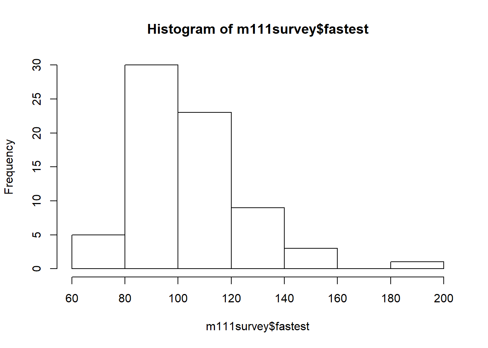
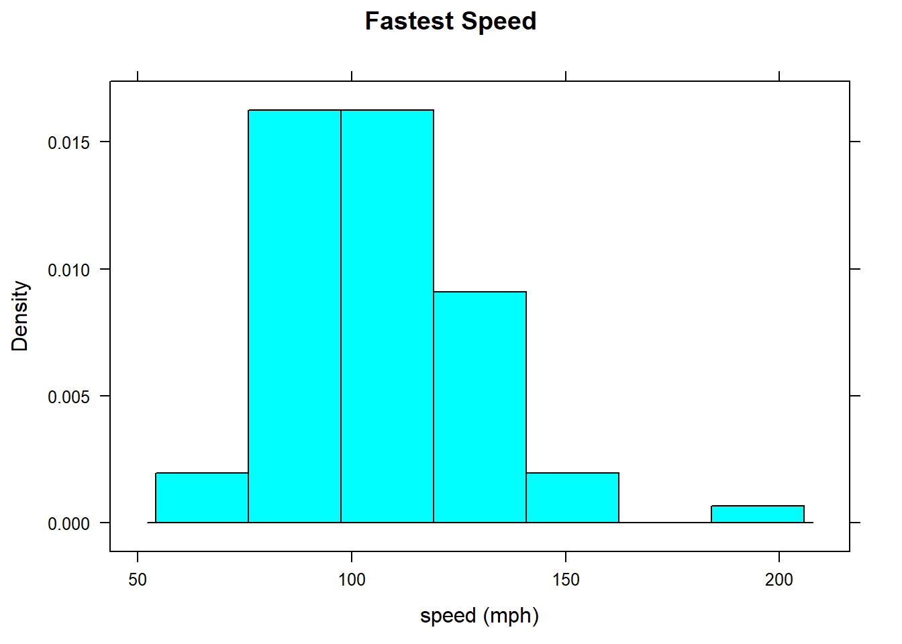

Chapter 2 What is the dataset about? Structure?
## starting httpd help server ... done## 'data.frame': 71 obs. of 12 variables:
## $ height : num 76 74 64 62 72 70.8 70 79 59 67 ...
## $ ideal_ht : num 78 76 NA 65 72 NA 72 76 61 67 ...
## $ sleep : num 9.5 7 9 7 8 10 4 6 7 7 ...
## $ fastest : int 119 110 85 100 95 100 85 160 90 90 ...
## $ weight_feel : Factor w/ 3 levels "1_underweight",..: 1 2 2 1 1 3 2 2 2 3 ...
## $ love_first : Factor w/ 2 levels "no","yes": 1 1 1 1 1 1 1 1 1 1 ...
## $ extra_life : Factor w/ 2 levels "no","yes": 2 2 1 1 2 1 2 2 2 1 ...
## $ seat : Factor w/ 3 levels "1_front","2_middle",..: 1 2 2 1 3 1 1 3 3 2 ...
## $ GPA : num 3.56 2.5 3.8 3.5 3.2 3.1 3.68 2.7 2.8 NA ...
## $ enough_Sleep : Factor w/ 2 levels "no","yes": 1 1 1 1 1 2 1 2 1 2 ...
## $ sex : Factor w/ 2 levels "female","male": 2 2 1 1 2 2 2 2 1 1 ...
## $ diff.ideal.act.: num 2 2 NA 3 0 NA 2 -3 2 0 ...2.1 Tally the sexes (A table of counts)
## sex
## female male
## 40 31There are 40 female students and 31 male students participated in this survey.
2.3 Get percentages
##
## sex female male Total
## 56.34 43.66 1002.4 Get a barchart
## Get a contingency table
## seat
## sex 1_front 2_middle 3_back
## female 19 16 5
## male 8 16 72.5 Get a contingency table by percentages
## seat
## sex 1_front 2_middle 3_back Total
## female 47.50 40.00 12.50 100.00
## male 25.81 51.61 22.58 100.002.6 Get a barchart to compare

2.7 Describing a numerical variable
## min Q1 median Q3 max mean sd n missing
## 60 90.5 102 119.5 190 105.9014 20.8773 71 02.8 Another way
## Min. 1st Qu. Median Mean 3rd Qu. Max.
## 60.0 90.5 102.0 105.9 119.5 190.02.9 Describing the center: The Mean
sample mean \[\bar{x}=\frac{\sum x_i}{n}\] where \(n\) is the sample size
2.10 Population Mean
\[\mu=\frac{\sum x_i}{n}\]
2.12 Weighted Mean
When the data values are assigned different weight, \(w\), we can compute a weighted mean \[\bar{x}=\frac{\sum (wx)}{\sum w}\] In her first semster of college, a student of the author took five courses. Her final grades along wiht the number of credits for each course werer A (3 credits), A (4 credits), B (3 credits), C (3 credits), and F (1 credit). Find the GPA
See the notes on Whiteboard.
2.15 Quantiles.Also called percentiles.
## 20% 50% 80% 90%
## 90 102 120 130- About 20% of the students drove slower than 90 mph
- About 50% drove slower than 102 mph (median!)
- About 80% drove slower than 120 mph
- About 90% drove slower than 130 mph
2.16 Inverting a Quantile
Given an observation x from your data, you want to know its corresponding quantile, that is, you want to know what fraction of the data is less than x
## [1] 0.4084507The data value 100 is at 41% percentile.
2.17 Describing Shapes
2.18 Interqualtile Range (IQR)
\[IQR=Q_3-Q_1\] # Making a Density Plot
2.19 Boxplot
ImaginaryData <- c(7.1,7.3,7.5,8.2,8.5,9.1,9.5,
9.8,9,9,9.9,10,10.5,11)
bwplot(~ImaginaryData,xlab="x",
main="Example Boxplot")## Another way to get a boxplot

2.20 Boxplot for the height in m111survey
 ## Locate the exact outliers:
## $stats
## [1] 59.00 65.00 68.00 71.75 79.00
##
## $n
## [1] 71
##
## $conf
## [1] 66.7343 69.2657
##
## $out
## [1] 54 512.21 Compare Distributions
## sex min Q1 median Q3 max mean sd n missing
## 1 female 60 90 95 110.0 145 100.0500 17.60966 40 0
## 2 male 85 99 110 122.5 190 113.4516 22.56818 31 02.22 Compare Boxplots

2.23 z-score
Suppse you want to compare an individual to a group
\[z=\frac{x-\bar{x}}{s}\] Suppose that Linda is 72 inches tall. How does she compare with the other GC students in the m111survey data?
## min Q1 median Q3 max mean sd n missing
## 51 65 68 71.75 79 67.98662 5.296414 71 0## [1] 0.754717Since the z-score is between \(-2\) and \(2\), the data value is usual compared with the other students. Is Linda unusually tall, for a female?
## sex min Q1 median Q3 max mean sd n missing
## 1 female 51 63 65 68 78 64.93750 4.621837 40 0
## 2 male 65 70 72 74 79 71.92097 3.048545 31 0## [1] 1.521739